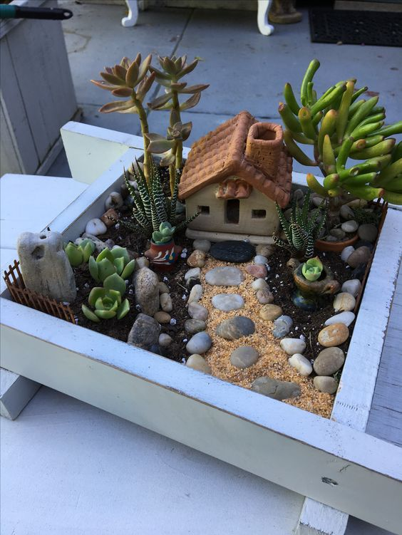

Module:

1. Arta culinară și sănătatea.
Unitați de învățare:- Originea alimentelor.
- Prelucrarea produselor alimentare.
- Realizarea unui proiect de pregatire a unor bucate.
- Evaluare și valorificarea proiectelor.
- Șorț, broboadă, manușă pentru vase fierbinți.
- Ustensile și tacâmuri.
- Produse alimentare.
2.Arta acului - meșteșug popular
Unitați de învățare:- Specificul meșteșugului Cusutul și brodatul tradițional.
- Tehnici de cusut și brodat.
- Realizarea unui articol simplu.
- Evaluare și valorificarea articolului.
- Pânză (bumbac, in, etamină).
- Ac și ață muline.
- Foarfece.
- Gherghef ( Cerc).
3. Colaje și decorațiuni.
Unitați de învățare:- Ce este colajul? Reguli sanitar-igienice și de protecție a muncii.
- Varietatea decorațiunilor.
- Realizarea unui articol simplu.
- Evaluare și valorificarea articolului.
- Hârtie, carton, plastic.
- Foarfece, cutter.
- Clei PVA / uscat /lichid.
- Vopsele acrilice.
5. Educație digitală.
Unitați de învățare:- Hardware. Dispozitive digitale pentru digitalizarea informației.
- Digitalizăm lumea din jurul nostru.
- Editarea imaginilor – primii pași.
- Evaluare și valorificarea produsului.
- Smartphone.
- www.canva.com
- Aplicații pentru editare video.
- Acces la INTERNET.

8. Designul spațiilor verzi.
Unitați de învățare:- Creșterea plantelor.
- Norme sanitar-igienice și reguli de protecție a muncii.
- 3. Condiții de realizare a grădinii cu flori.
- Evaluare și valorificarea produselor.
- Ghiveci – 3 buc.;Pamânt universal.
- Cutie de la incălțăminte-1buc/ ladiță decorative din plastic.
- Piese decorative ( pietricele, lemn etc.).
9.Design vestimentar
Unitați de învățare:- Ce este designul vestimentar?
- Proiectarea vestimentară.
- Transformarea/crearea unui articol vestimentar.
- Evaluare și valorificarea articolului.
- Hârtie cartonată.
- Hărtie colorată, creponată, diverse țesături.
- Clei PVA sau Pistol cu clei fierbinte.
- Tubulețe, capac pet 6 L, furnitură..